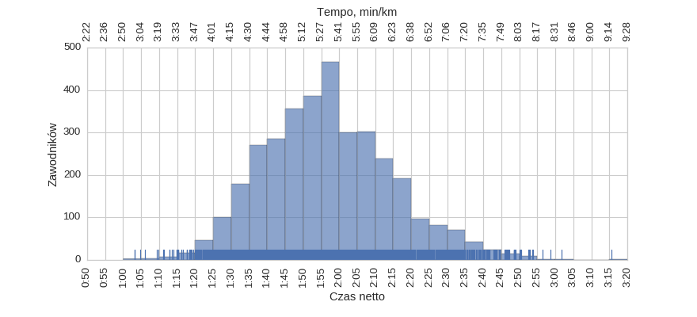
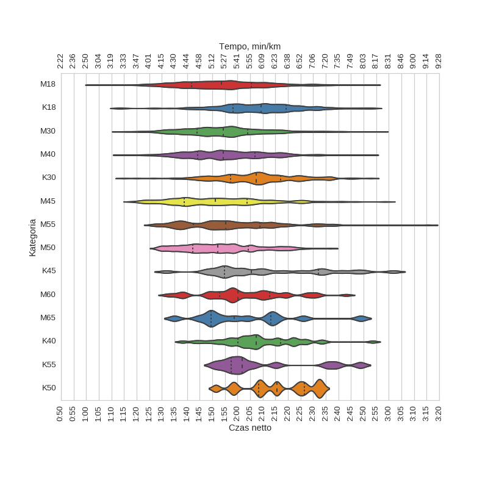
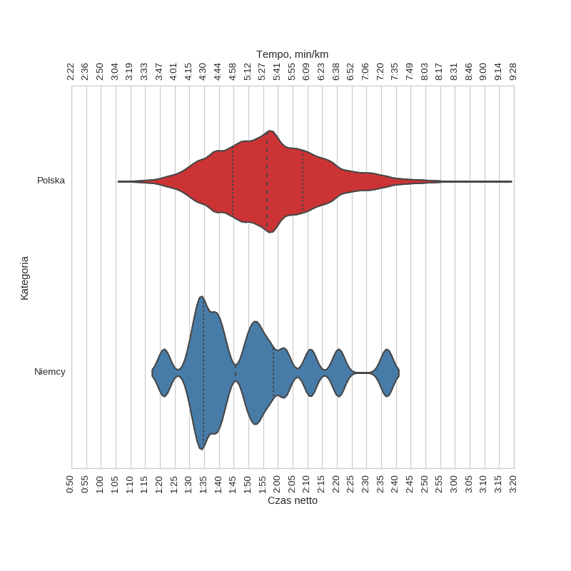

4 Poznan* Półmaraton (2011)
Histogramy
Klasyfikacja generalna

| mean | std | min | 25% | 50% | 75% | max | |
|---|---|---|---|---|---|---|---|
| czas | 1:56:58 | 0:17:49 | 1:03:14 | 1:44:25 | 1:56:13 | 2:08:17 | 3:15:33 |
kobiety
| mean | std | min | 25% | 50% | 75% | max | |
|---|---|---|---|---|---|---|---|
| czas | 2:08:38 | 0:16:44 | 1:12:52 | 1:57:36 | 2:08:11 | 2:19:02 | 3:01:45 |
mężczyźni
| mean | std | min | 25% | 50% | 75% | max | |
|---|---|---|---|---|---|---|---|
| czas | 1:54:52 | 0:17:11 | 1:03:14 | 1:42:39 | 1:53:59 | 2:05:23 | 3:15:33 |
Wykresy rybkowe
wg płci
| czas | count | |||||||
|---|---|---|---|---|---|---|---|---|
| mean | std | min | 25% | 50% | 75% | max | ||
| plec | ||||||||
| K | 2:08:38 | 0:16:44 | 1:12:52 | 1:57:36 | 2:08:11 | 2:19:02 | 3:01:45 | 536 |
| M | 1:54:52 | 0:17:11 | 1:03:14 | 1:42:39 | 1:53:59 | 2:05:23 | 3:15:33 | 2964 |
wg kategorii

| czas | count | |||||||
|---|---|---|---|---|---|---|---|---|
| mean | std | min | 25% | 50% | 75% | max | ||
| kat | ||||||||
| K18 | 2:08:44 | 0:16:42 | 1:12:52 | 1:58:16 | 2:09:19 | 2:19:11 | 2:53:44 | 238 |
| K30 | 2:07:25 | 0:16:17 | 1:14:55 | 1:57:11 | 2:07:31 | 2:16:59 | 2:52:45 | 202 |
| K40 | 2:08:43 | 0:14:44 | 1:38:11 | 2:00:06 | 2:07:18 | 2:17:04 | 2:53:37 | 44 |
| K45 | 2:12:12 | 0:23:18 | 1:31:45 | 1:54:50 | 2:05:28 | 2:32:00 | 3:01:45 | 24 |
| K50 | 2:15:46 | 0:13:44 | 1:51:26 | 2:08:26 | 2:15:35 | 2:26:37 | 2:33:34 | 14 |
| K55 | 2:10:39 | 0:19:38 | 1:50:46 | 1:57:27 | 2:01:54 | 2:20:20 | 2:48:44 | 12 |
| M18 | 1:54:19 | 0:17:49 | 1:03:14 | 1:41:44 | 1:53:32 | 2:05:27 | 2:52:59 | 997 |
| M30 | 1:54:51 | 0:16:22 | 1:13:30 | 1:43:51 | 1:54:21 | 2:04:00 | 2:56:23 | 1078 |
| M40 | 1:56:00 | 0:16:26 | 1:13:55 | 1:44:18 | 1:54:24 | 2:07:02 | 2:52:31 | 330 |
| M45 | 1:52:37 | 0:18:45 | 1:18:34 | 1:38:58 | 1:51:18 | 2:03:44 | 2:58:38 | 219 |
| M50 | 1:53:35 | 0:14:59 | 1:28:14 | 1:42:15 | 1:52:12 | 2:04:22 | 2:36:43 | 159 |
| M55 | 1:57:33 | 0:19:05 | 1:26:47 | 1:42:30 | 1:55:26 | 2:08:55 | 3:15:33 | 118 |
| M60 | 2:02:54 | 0:16:35 | 1:31:58 | 1:52:49 | 2:00:04 | 2:12:46 | 2:43:07 | 46 |
| M65 | 2:03:12 | 0:19:57 | 1:34:59 | 1:49:37 | 1:58:49 | 2:13:18 | 2:48:56 | 13 |
wg krajów

| czas | count | |||||||
|---|---|---|---|---|---|---|---|---|
| mean | std | min | 25% | 50% | 75% | max | ||
| kraj | ||||||||
| Niemcy | 1:49:46 | 0:20:05 | 1:21:21 | 1:34:41 | 1:45:35 | 1:58:23 | 2:36:50 | 16 |
| Polska | 1:57:09 | 0:17:40 | 1:09:18 | 1:44:37 | 1:56:16 | 2:08:20 | 3:15:33 | 3448 |
Menu
HistogramyWykresy rybkowe
∙ wg płci
∙ wg kategorii
∙ wg krajów
Liczba uczestników: 3500
Wygenerowano: 2016-03-27 12:45:19.655388